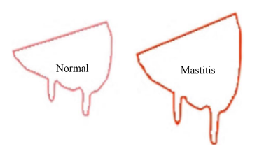

Explainations: Daily readings of udder four quarter size and temperature is displayed below.When temperature is above threshold and udder size is significantly higher than other udder the cow is sick. Infected udder is highlighted in red and temperature above the threshold is highlighted in red.
| Index | Date | Cow ID | Months_after_giving_birth | Udder Values | Udder Temperature | |||
|---|---|---|---|---|---|---|---|---|
| Front Left | Front Right | Rear Left | Rear Right | |||||
| 1 | Cow_1 | 3 | 173 | 335 | 173.5 | 173 | 49 | |
| 2 | Cow_4 | 1 | 342.5 | 173 | 171.5 | 168.5 | 52 | |


Variation in Udder